POINT
先代から大切に守り継がれてきたアットホームな温かさが私たちの自慢です。長く安心して働ける環境を整えています。
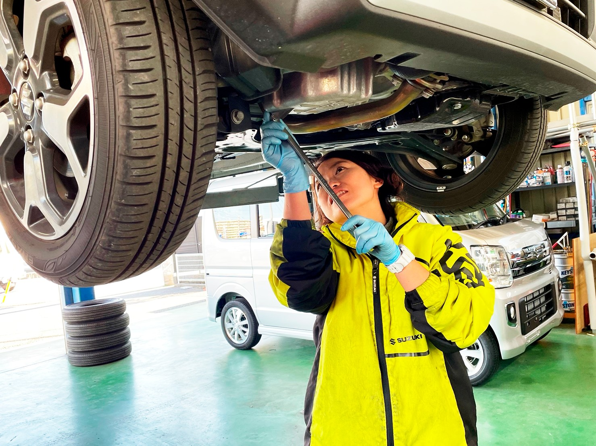
POINT 01
柏の葉店で働く4人は、全員が未経験からのスタート。整備士の国家資格は費用を会社が全額負担し、勤務時間内に講習へ通えます（給与も支給）。
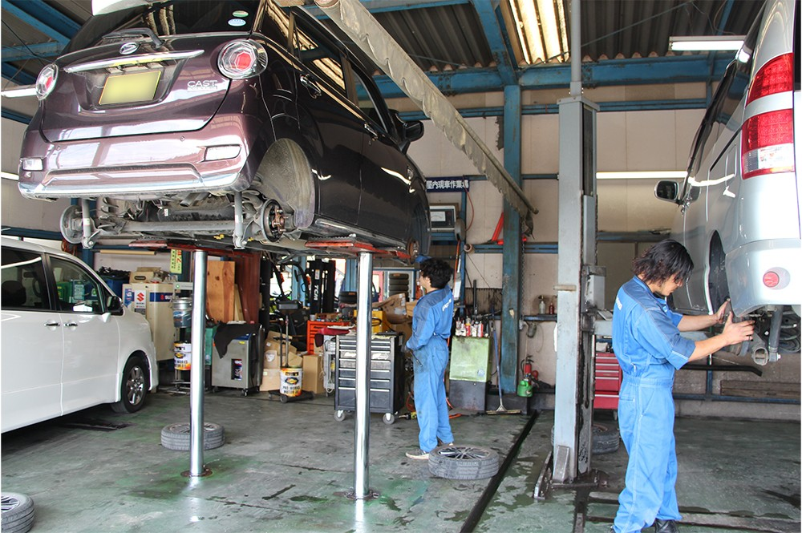
POINT 02
国内外の乗用車、軽トラック・大型トラック、消防車や救急車まで対応する整備工場。頼れる先輩に教わりながら、オールラウンドな技術を磨けます。
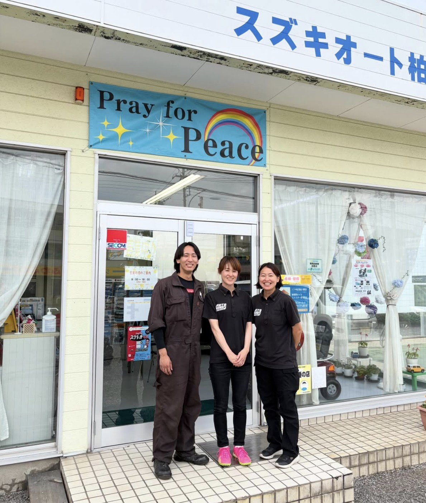
POINT 03
週休2日制に加え、GW・夏季・年末年始の連休あり。賞与年2回、昼食の仕出し弁当は会社が半額負担など、福利厚生も充実しています。
WORKPLACE
どちらの店舗でも採用を行っています。ご希望や適性に合わせてご相談ください。
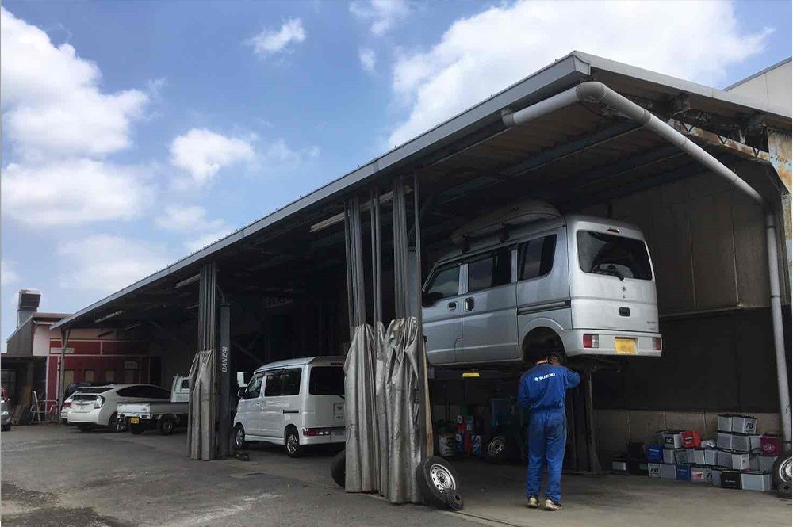
車検・点検・一般整備・鈑金塗装まで手がける指定自動車整備工場。多様な車両にふれ、技術を磨きたい方に。
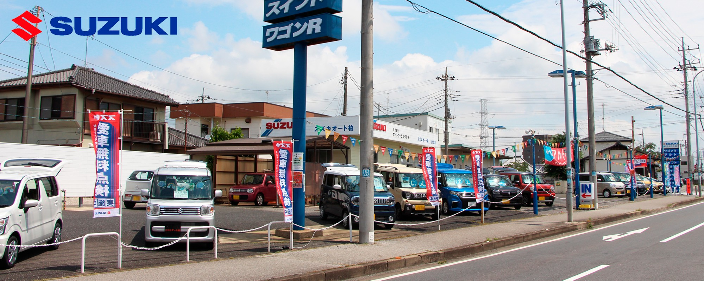
スズキの新車・中古車販売と点検整備を行う地域密着のお店。お客様との距離が近く、ゆとりを持って働けます。
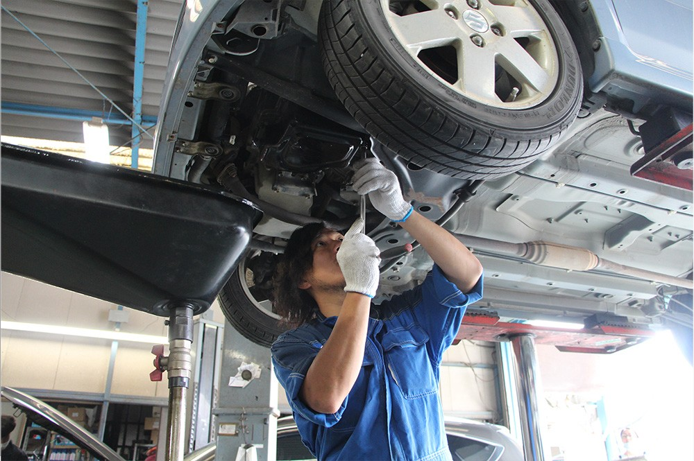
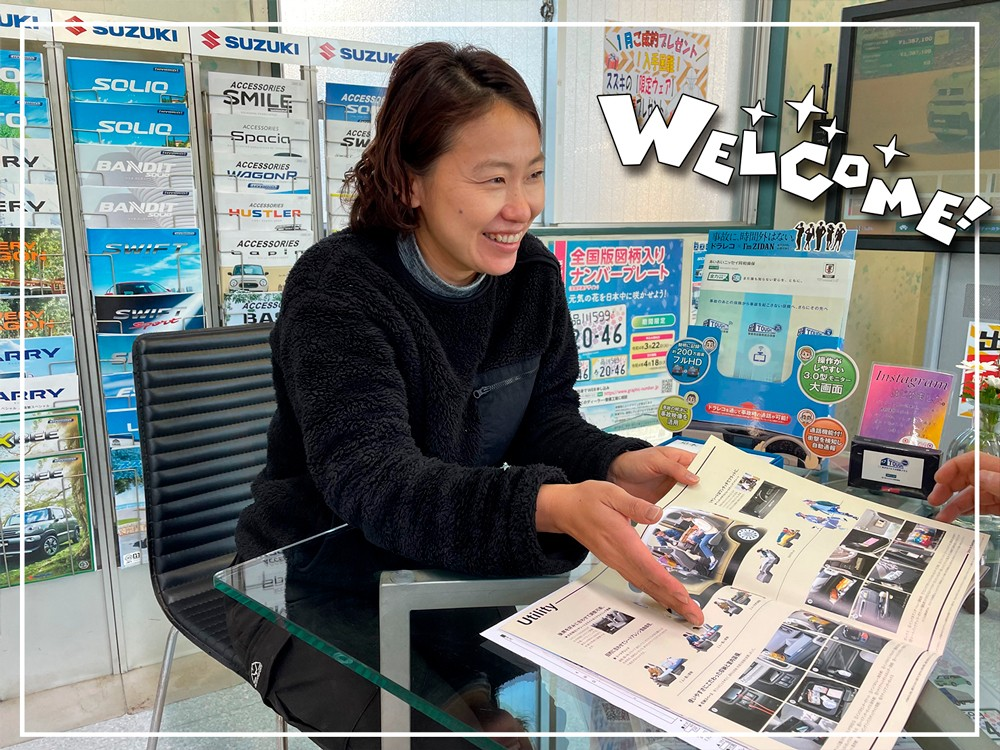
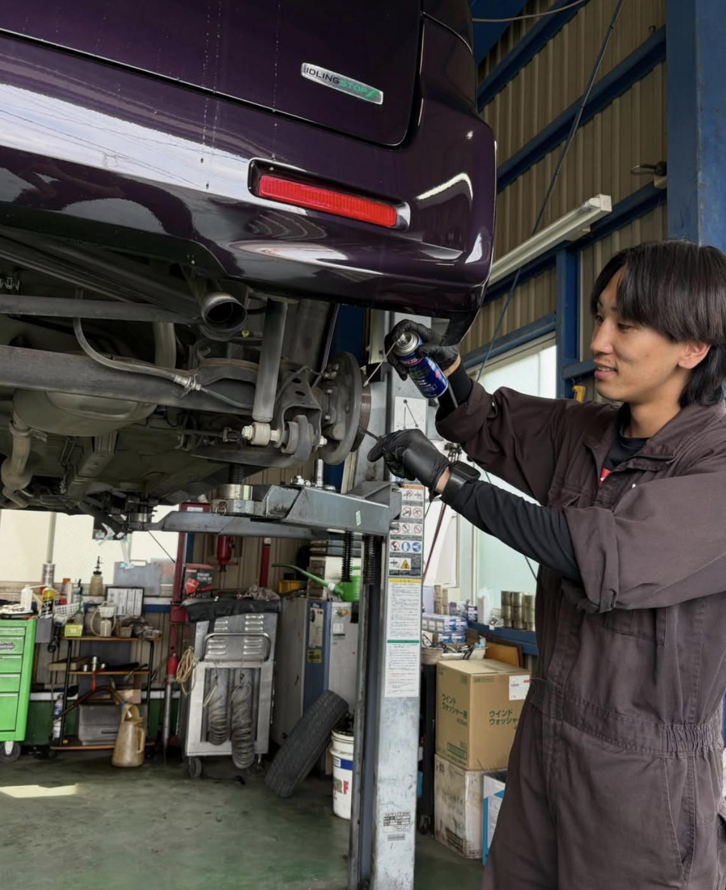
ONE DAY
入社後の働き方をイメージしていただけるよう、ある1日をご紹介します。
※ここはサンプルです。実際には御社スタッフの1日の流れに差し替えます
8:45
その日の入庫予定と作業の分担を全員で確認します。
9:00
先輩と一緒に入庫車の点検からスタート。見習いのうちはタイヤ交換やオイル交換から覚えます。
12:00
仕出し弁当は会社が半額負担。みんなでわいわい食べることも。
13:00
修理や部品の取り付けなど。分からないことはその場で先輩に質問できます。
15:00
お好みのドリンクでひと息。午後の作業に備えます。
15:30
仕上がった車を洗車し、お客様のもとへ。移動は柏市内がほとんどです。
18:00
工具を片付けて1日終了。おつかれさまでした！
MESSAGE
実際に働くスタッフの声をお届けします。
※ここはサンプルです。実際に働く先輩からのメッセージ・写真に差し替えます
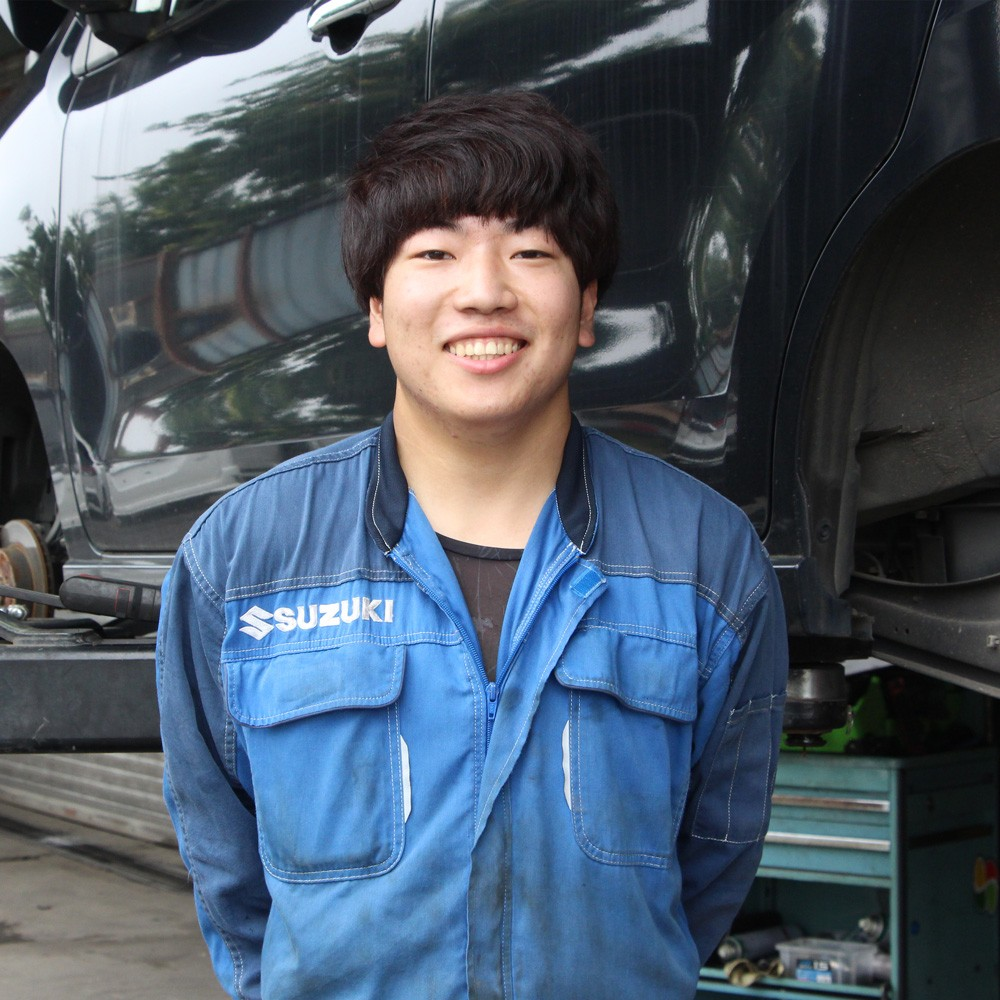
経験も資格もない状態で入社しましたが、先輩が横について一から教えてくれました。資格の費用を会社が出してくれるのも本当にありがたいです。
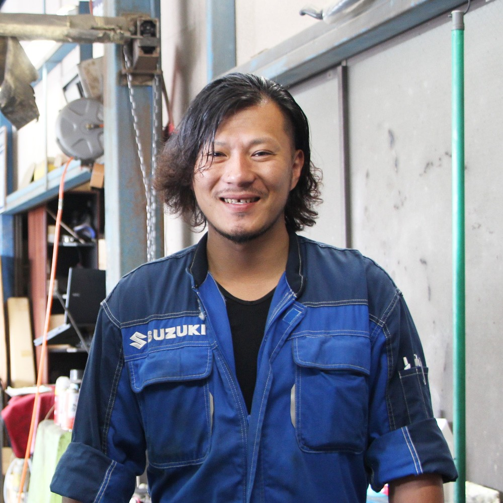
乗用車からトラックまで、毎日いろんな車に触れられるのが面白い。夏と年末年始は1週間以上休めるので、趣味の時間もしっかり取れています。
車に詳しくなかった私でも、周りのスタッフとお客様のやさしさに支えられて楽しく働けています。育児中の方も大歓迎です！
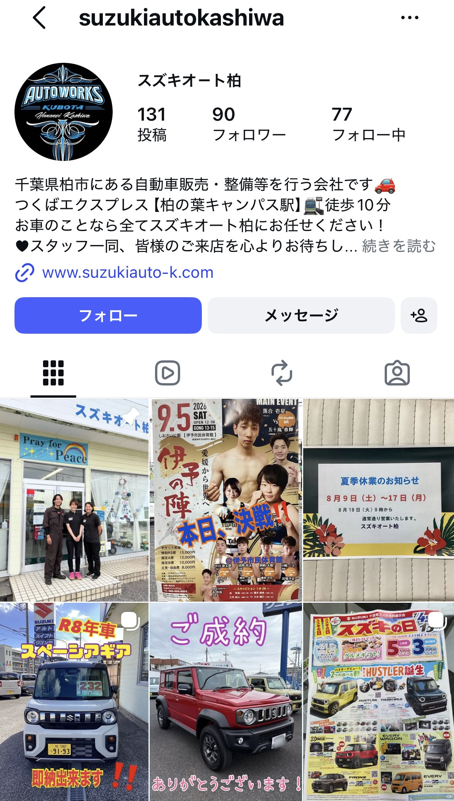
スズキオート柏の公式Instagramでは、ご成約・納車の様子や入荷したクルマ、お店からのお知らせ、スタッフの日常などを投稿しています。「どんな人が働いているんだろう？」と気になったら、ぜひのぞいてみてください。
@suzukiautokashiwa
Instagramを見るFAQ
※ここはサンプルです。実際には御社の「よくある質問」が入ります
はい、大歓迎です。整備士は見習いからスタートでき、資格取得の費用は会社が全額負担します。事務スタッフも車の知識は不要です。
本社工場（花野井）と柏の葉店（若柴）のどちらでも採用しています。面接時にご希望をお聞かせください。
お電話またはフォームからご応募 → 面接（1回を予定）→ 内定、という流れです。職場見学のご相談も承ります。
週休2日制に加えて、GW・夏季・年末年始の連休があります。夏季と年末年始はそれぞれ1週間以上が通例です。
はい、無料駐車場があります。通勤距離に応じてガソリン代を支給します（規定あり）。
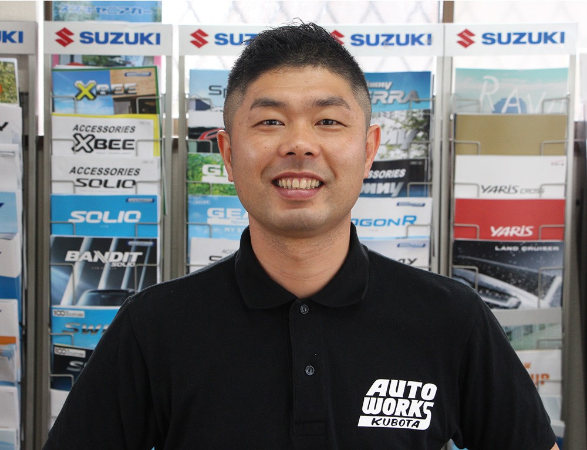
RECRUITER
応募前の質問や職場見学のご相談など、どんなことでもお気軽にご連絡ください。私たちが責任を持ってご対応します。
採用担当：○○ ○○
※ここはサンプルです。実際の採用担当者の写真・お名前・メッセージに差し替えます
担当者に問い合わせるREQUIREMENTS
| 募集職種 | ① 自動車整備士（本社工場／柏の葉店） ② 事務スタッフ（本社工場）・総合事務スタッフ（柏の葉店） ③ 店長候補（柏の葉店） |
|---|---|
| 雇用形態 | 正社員（試用期間6ヶ月・同条件） |
| 仕事内容 | ① 整備士：自動車の整備・修理・点検・車検、部品取り付け、引き取り・納車、洗車など。見習いスタート可。 ② 事務：来店受付・電話対応、データ入力・書類作成、運輸支局への書類提出、引き取り・納車など。 ③ 店長候補：新車・中古車販売、車検・点検受付、保険業務などの接客と、売上・スタッフの管理・育成。 |
| 給与 | ① 整備士：月給270,000円～420,000円＋各種手当（2級資格手当20,000円含む） 見習いの方：月給210,000円～250,000円＋各種手当 ② 事務：月給215,000円～320,000円＋各種手当 ③ 店長候補：月給350,000円～500,000円＋各種手当（販売手当あり・ノルマなし） ※経験・能力・資格を考慮のうえ面接で決定します |
| 応募資格 | ① 整備士：普通自動車免許（AT限定不可）／2級整備士資格（見習いの方は不問） ② 事務：普通自動車免許（AT限定可）／未経験OK ③ 店長候補：自動車業界の経験者（職種不問・ブランク可）／普通自動車免許（AT限定可）／基本的なPCスキル ※学歴・性別不問 |
| 勤務地 | オートワークスクボタ（本社工場）：千葉県柏市花野井1708-4 スズキオート柏・柏の葉店：千葉県柏市若柴340 ※マイカー通勤可（無料駐車場あり） |
| 勤務時間 | 8:45～18:00（休憩90分） ※勤務時間内に資格取得講習へ通えます（給与支給） |
| 休日・休暇 | 本社工場：週休2日制（日曜＋第2・第4土曜）、祝日 ※事務スタッフは完全週休2日制（土・日）、祝日 柏の葉店：週休2日制（月曜＋第2・第4日曜） 共通：GW・夏季・年末年始（会社カレンダーによる）、有給休暇 |
| 待遇・福利厚生 |
|